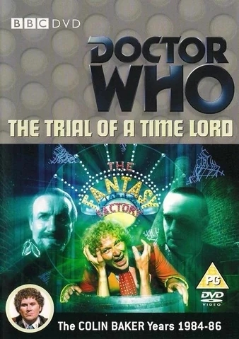
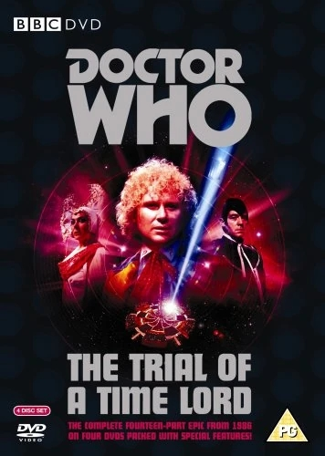
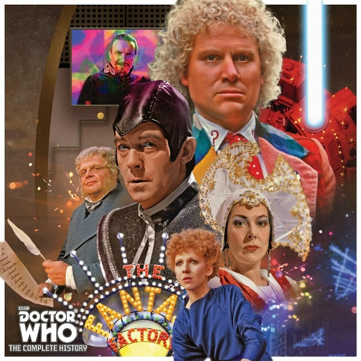
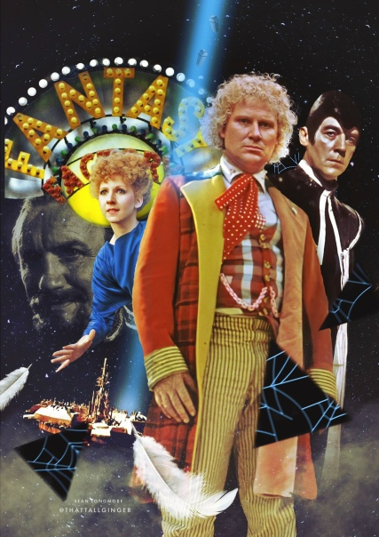

Эра Шестого Доктора (23 сезон)
<<< НАЗАД ||| 4. Совершенный враг ||| ДАЛЬШЕ >>>
Субтитры: Русские и Английские |  |
|---|---|
Субтитры: Русские {Huracan Team} и Английские | |
с фанатской локализацией видеоряда (HuracanTeam) Субтитры: Русские {Huracan Team} и Английские | |
The Ultimate Foe
Дата выхода: 29 ноября - 6 декабря 1986
Формат: 25-минутный эпизод и 30-минутный эпизод
 |  попутчик |
Финал суда. Доктор заявляет, что улики Валеярда подделаны, и получает неожиданного союзника — Мастера, который раскрывает истинную личность обвинителя. Валеярд бежит в Матрицу, и Доктор с Глитцем отправляются за ним в мир иллюзий, где предстоит последняя схватка.
Последняя серия Колина Бейкера в роли Доктора — его уволили, и он отказался сниматься в регенерации. Сценарий начал писать Роберт Холмс, но скончался, не закончив. Эрик Сэвард дописал, но рассорился с продюсером и ушёл, забрав свой сценарий — второй эпизод дописывали Пип и Джейн Бейкеры в спешке. А последними словами Шестого Доктора на экране остались «Морковный сок, морковный сок, морковный сок…»
 VHS - октябрь 1993 |   DVD+Boxset - 29 сентября 2008 |  Blu-ray - 7 октября 2019 * Версия в нашей группе |
|---|





Отрывок: